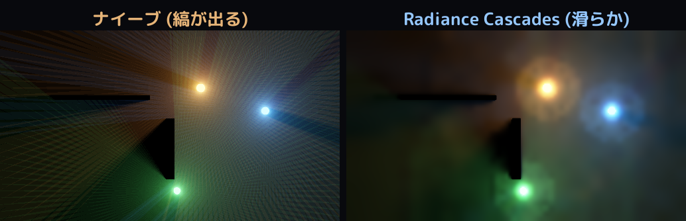
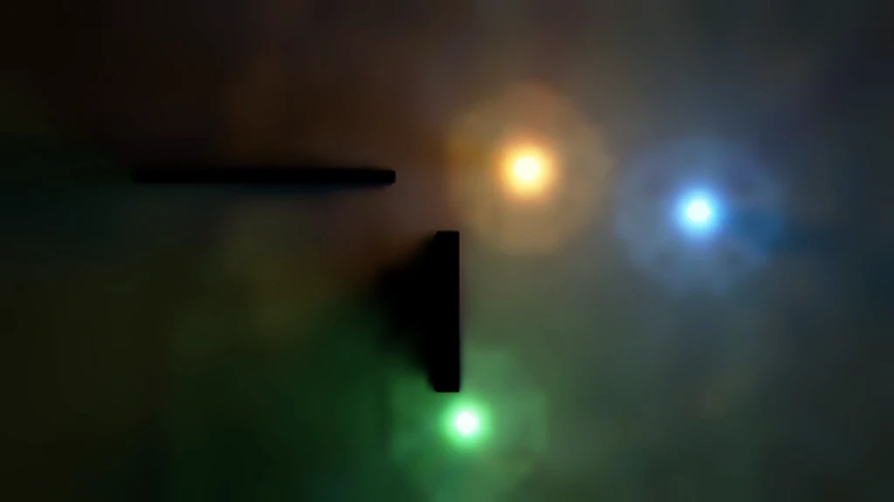

/ lab
Radiance Cascades：ノイズ無しのリアルタイム大域照明
2D シーンに置いた光と壁から、光が回り込む大域照明 (色のにじみ・柔らかい半影) を、ノイズを出さずにリアルタイムで解く実装です。
2024 年に発表された Radiance Cascades という手法を、レイトレ専用コアを使わずすべて DX12 のコンピュートシェーダで組みました。照明は自分にとって新しい領域で、自作エンジンの DX12 基盤の上に一式を実装しています。
作ったもの
光源や壁を置くと、その光が空間に回り込み、壁の裏に柔らかい影を落とし、近くの面に色がにじみます。 レイを飛ばして光を集める素朴な方法だと、レイの本数が足りずノイズや縞が出ますが、 Radiance Cascades はそれをノイズ無しで、しかも桁違いに安く解きます。

仕組み
肝は「空間の細かさと角度の細かさのトレードオフ」です。近くの光は空間的に細かく・角度は粗くて足り、 遠くの光は角度を細かく・空間は粗くて足ります。そこで放射輝度を、この配分を段階的に変えた階層 (cascade) で表します。
- 各 cascade で、決まった距離区間だけレイを飛ばす (区間レイキャスト)
- 各 cascade は同じ要素数になるよう設計し、1 枚のテクスチャに probe × 方向を詰める
- 遠い cascade から近い cascade へ、probe をバイリニア補間しながら合成 (マージ) していく
- 最下段を解いて画面の照明にし、HDR・ブルーム・トーンマップで仕上げる
これで、全ピクセルから無数のレイを飛ばすのと同等の絵を、階層のおかげで安く・ノイズ無しで得られます。 レイトレ専用コアは使わず、すべてコンピュートシェーダで完結します。

参考
Alexander Sannikov, "Radiance Cascades" (2024)。